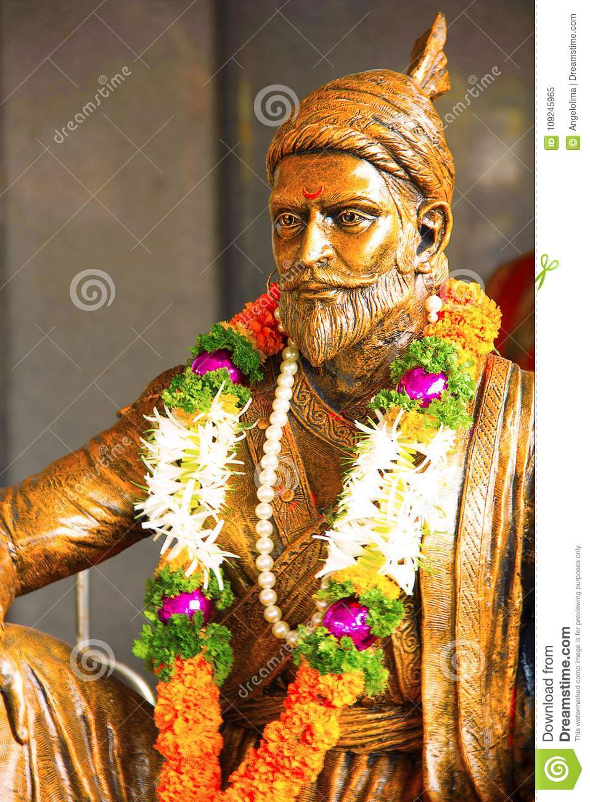
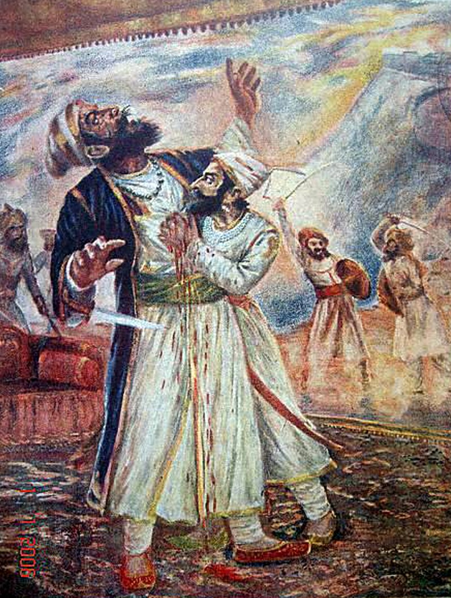

छत्रपति शिवाजी भोसले (1630-1680 ई.) भारत के एक महान राजा एवं रणनीतिकार थे जिन्होंने 1674 ई. में पश्चिम भारत में मराठा साम्राज्य की नींव रखी। इसके लिए उन्होंने मुगल साम्राज्य के शासक औरंगज़ेब से संघर्ष किया। सन् 1674 में रायगढ़ में उनका राज्याभिषेक हुआ और वह "छत्रपति" बने।[1] तत्वदर्शी संत मिला होता तो शिवाजी मोक्ष का मार्ग चुनते|
छत्रपती शिवाजी महाराज ने अपनी अनुशासित सेना एवं सुसंगठित प्रशासनिक इकाइयों कि सहायता से एक योग्य एवं प्रगतिशील प्रशासन प्रदान किया। उन्होंने समर-विद्या में अनेक नवाचार किए तथा छापामार युद्ध (Guerilla Warfare) की नयी शैली (शिवसूत्र) विकसित की। उन्होंने प्राचीन हिन्दू राजनीतिक प्रथाओं तथा दरबारी शिष्टाचारों को पुनर्जीवित किया और मराठी एवं संस्कृत को राजकाज की भाषा बनाया। वे भारतीय स्वाधीनता संग्राम में नायक के रूप में स्मरण किए जाने लगे। बाल गंगाधर तिलक ने राष्ट्रीयता की भावना के विकास के लिए शिवाजी जन्मोत्सव की शुरुआत की।
मालोजीमालो भोसले (1552–1597) अहमदनगर सल्तनत के एक प्रभावशाली जनरल थे, पुणे चाकन और इंदापुर के देशमुख थे। मालो जी के बेटे शहाजी भी बीजापुर सुल्तान के दरबार में बहुत प्रभावशाली राजनेता थे। शाहजी अपने पत्नी जीजाबाई से शिवाजी का जन्म हुवा । More imformation